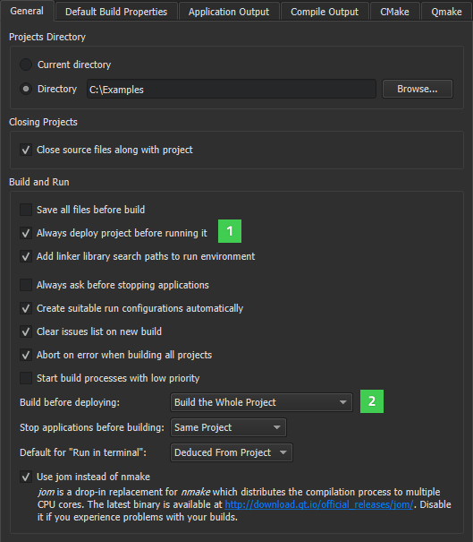

Customizing the Build Process
To configure how projects are built, deployed, and run, select Tools > Options > Build & Run > General.

By default, the Always deploy project before running it (1) and Build the Whole Project (2) options are enabled. Therefore, when you select the Run function, Qt Creator checks for changes in the project files and also builds and deploys the project if necessary.
To deploy applications without building them or to just build the application that you want to run, select the appropriate options in the Build before deploying field.
By default, the applications that the project contains are stopped before rebuilding the project. To stop just the current application, the applications in the same build directory, all applications, or no applications, select the appropriate option in the Stop applications before building field.
On Windows, you can use jom instead of nmake for building the project to distribute the compilation process to multiple CPU cores. You can download jom from Qt Downloads. To use jom, select the Use jom instead of nmake check box. Deselect the check box if you experience build problems.